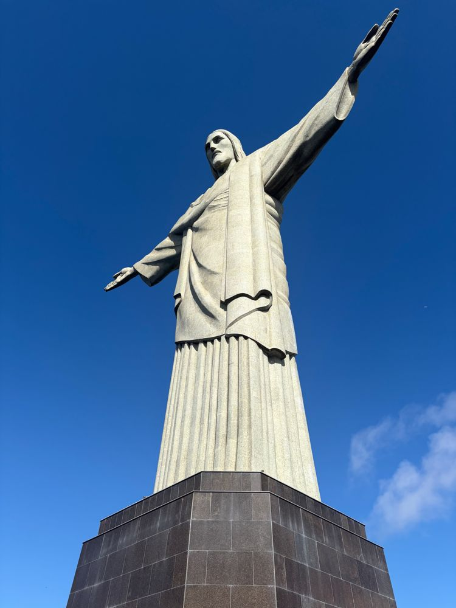
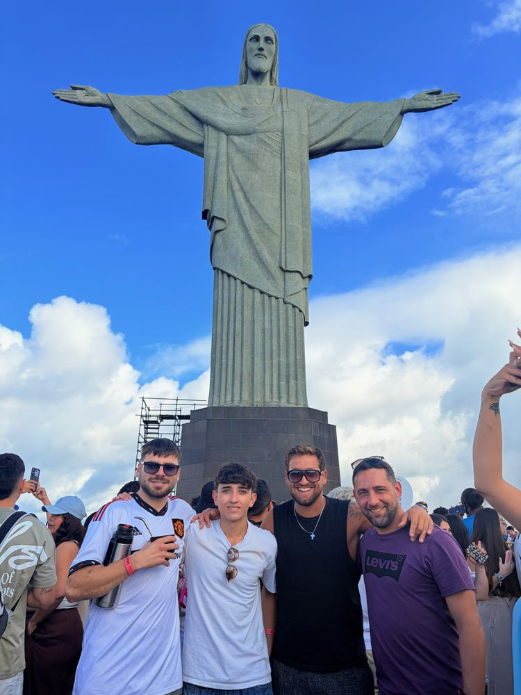
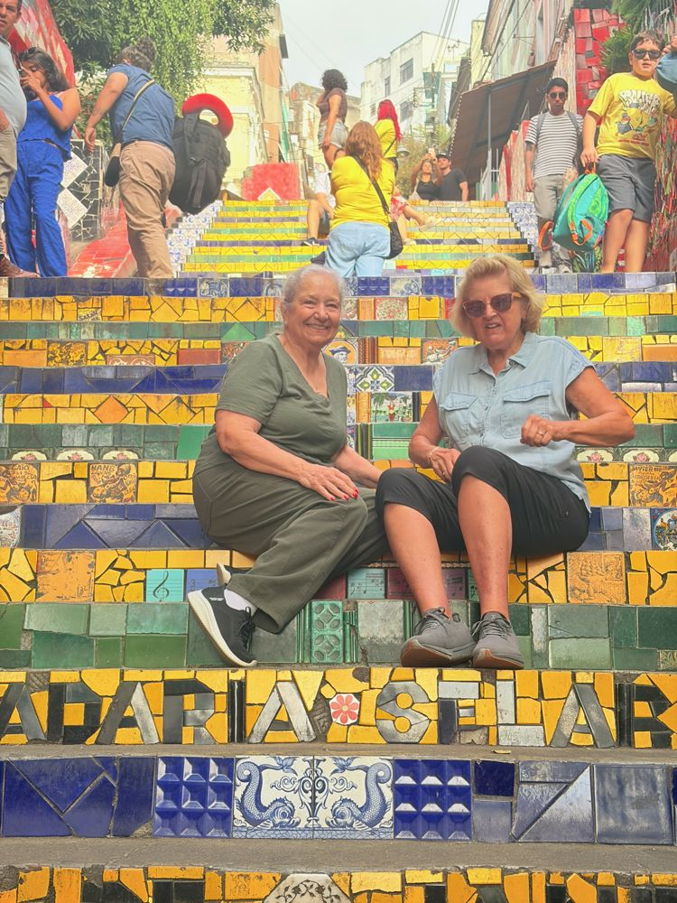
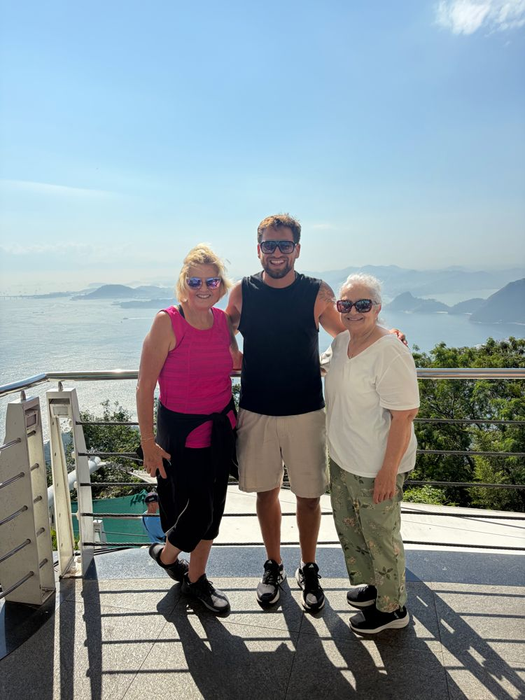

RIO IA EXPERIENCE
A day
in Rio
The city's icons in a single day, with guide, transport, tickets and lunch included.
Christ the RedeemerSugarloafSelarón StepsFull day
PRICEFrom R$ 450
Per adult, with tickets, transport, guide and lunch. Discounts for kids.
The route

Christ the Redeemer
Up Corcovado to see the whole city at the feet of the Christ.
Sugarloaf Mountain
Rio's famous cable car, with Guanabara Bay behind.

Selarón Steps
Steps covered in tiles from all over the world, Rio's most colorful corner.
Real moments from our tours
 With Christ behind
With Christ behind
Our groups
At the Selarón Steps Art on every step
Art on every stepRiding the cable car
 View from Sugarloaf
View from Sugarloaf
On top of the hillHappy clients
Real photos and videos from our tours.
What's included
- Guide for the whole tour
- Pickup in Zona Sul or Downtown (7:45 am)
- Tickets to Christ the Redeemer and Sugarloaf
- Lunch
- Stops at Maracanã (outside), the Metropolitan Cathedral and the Sambadrome
What to bring
- Photo ID
- Sunscreen
- Comfortable clothes
Good to know
Duration: about 10 hours.
Not included: drinks, desserts and the inside visit to Maracanã.
Kids: under 2 free (on lap) · ages 3–4 pay only Sugarloaf · ages 5–10, 50% off.
Not included: drinks, desserts and the inside visit to Maracanã.
Kids: under 2 free (on lap) · ages 3–4 pay only Sugarloaf · ages 5–10, 50% off.
How to book
Booking: confirmed with 100% payment, by Pix or card (card +5%). We confirm everything on WhatsApp.
Book on WhatsApp